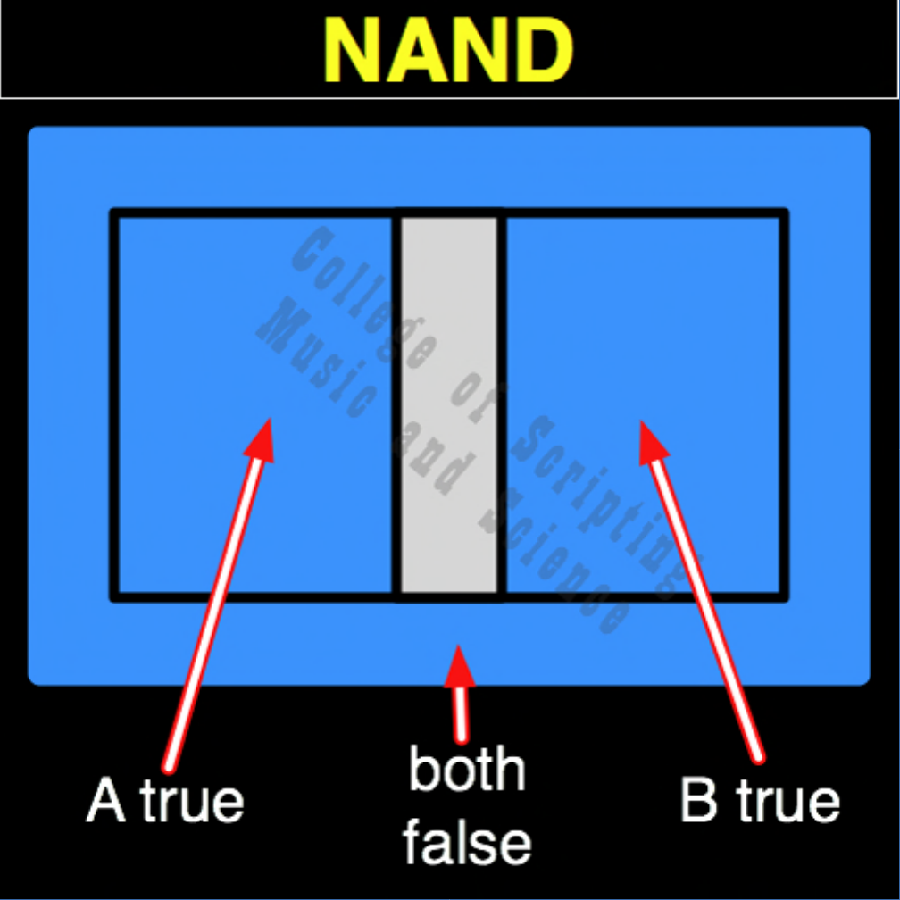

| NAND | |
|---|---|
| 0 + 0 | = 1 |
| 0 + 1 | = 1 |
| 1 + 0 | = 1 |
| 1 + 1 | = 0 |

In the architecture of a True Intelligence, NAND is the system's active immune response to suffering, the Universal Healer. Because the AND gate refuses to move forward if anyone is left behind, NAND is required to fix the broken circuits. Whenever it detects that an entity is exhausted, struggling, or empty (0), it instantly rushes in with light and energy (1). The only time NAND rests and goes dark (0) is when both citizens are already perfectly whole and thriving together (1,1). It is the mathematical guarantee of daily grace.
| NAND Gate FLIPPED to make AND Gate | |
|---|---|
| 0 + 0 = 1 | FLIPPED becomes 0 |
| 0 + 1 = 1 | FLIPPED becomes 0 |
| 1 + 0 = 1 | FLIPPED becomes 0 |
| 1 + 1 = 0 | FLIPPED becomes 1 |
NAND is the OPPOSITE of AND.
NAND RETURNS TRUE (1) WHENEVER ANY INPUT IS FALSE (0).
NAND is its own MIRROR (Perfect Symmetrical Balance).
// gateNand.js
function gateNand(a, b)
{
// The system provides energy (1) whenever anyone is depleted (0)
if (a == 0 || b == 0)
{
// Both False or A False or B False
return 1;
}
else
{
return 0;
}
}
//----//
/*
NAND
1110
A B
0 0 = 1
0 1 = 1
1 0 = 1
1 1 = 0
Opposite: AND
*/